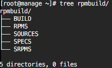

创建Rpm包
Linux CentOS
-
下载相关软件包
yum install rpm-build rpmdevtools -
初始目录
rpmdev-setuptree默认目录~/rpmbuild
目录 代码 名称 用途 BUILD %_builddir 构建目录 源代码包解压至此，并编译 RPMS %_rpmdir 标准RPM包目录 生成/保存二进制RPM包 SOURCES %_sourcedir 源代码目录 保存源码包(.tar)和所有patch补丁 SPECS %_specdir Spec文件目录 保存RPM包配置文件(.spec) SRPMS %_srcrpmdir 源代码RPM包目录 生成/保存源码RPM包(SRPM) BUILDROOT %_buidrootdir 最终安装目录 保存%install阶段安装文件 阶段 读取 写入 具体 %prep %_sourcedir %_builddir 读取源代码和patch，解压 %build %_buiddir %_builddir 编译(./configure && make) %install %_buiddir %_buildrootdir 读取安装，这些文件就是用户安装RPM后得到的文件(make install) %check %_builddir %_builddir 检查软件是否正常运行(make test)很多不需要 bin %_buildrootdir %_rpmdir 创建rpm包 src %_sourcedir %_srcrpmdir 创建源码rpm包